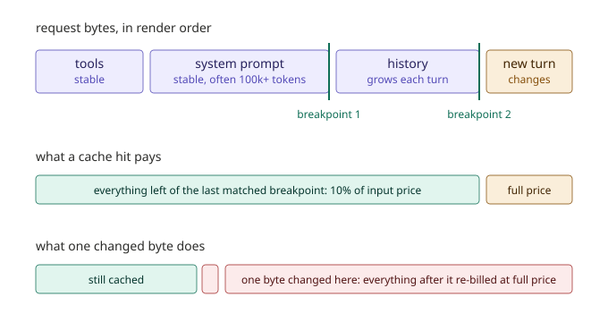
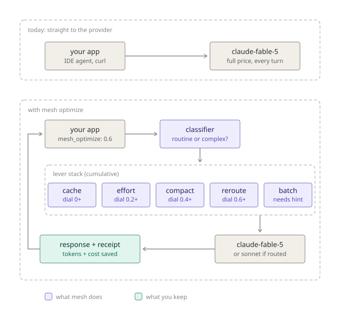
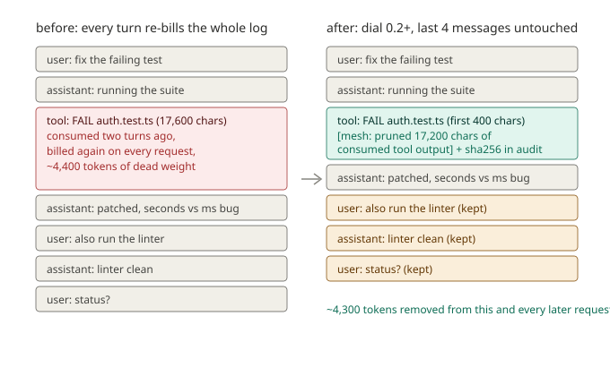
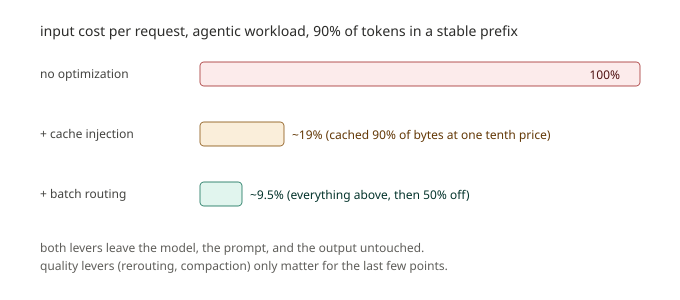

By Raushan Sharma, AI Fiesta. Published twelfth june twenty twenty-six.
mesh_optimize: 0 in the API, /optimize off in the CLI. Do not build production billing assumptions on top of beta behavior.
Claude Fable 5 launched on ninth june twenty twenty-six at $10 per million input tokens and $50 per million output tokens. Twice the price of Opus 4.8. Within days, people were posting screenshots of $100 plans drained in under 9 minutes.
The mechanism behind those screenshots is not mysterious. Fable's coding clients carry a system prompt of roughly 120,000 tokens. The chat API is stateless, so an agentic session re-sends that prompt, plus the entire growing conversation, on every single turn. An agent that makes 50 tool calls sends the transcript 50 times. Most of those bytes are identical from one request to the next, and most of them get billed at full price anyway.
I run Mesh API, an OpenAI compatible gateway that serves 300+ models through one key. Sitting in the request path between thousands of clients and the providers gives us a specific advantage: we can fix the repeated-bytes problem for customers without them changing their code. So we built Mesh Optimize, a single request parameter:
{
"model": "anthropic/claude-fable-5",
"messages": [...],
"mesh_optimize": 0.3
}
One number, 0 to 0.95, that controls how aggressively the gateway cuts your token spend. And on every optimized response, a receipt:
"mesh_savings": {
"tokens_saved": 3488,
"cost_saved_usd": 0.9349,
"levers_applied": ["tool_result_pruning", "cache_injection", "max_tokens_default"],
"baseline_estimate_method": "pre_optimization_char_estimate_div4"
}
That receipt is real output from the reference implementation, not a mockup. The rest of this post is how we got there, including the part where our first live request returned a 500 and taught us our own gateway's schema.
mesh_optimize is not yet enabled on the production gateway. The reference implementation and the CLI integration described below are where you can use it today.When I first pitched the caching lever, the obvious objection came up immediately, from me: caching only works when the same prompts repeat, right? Our users write new things every time. How does caching help someone building a new feature in their IDE?
The objection is half right, and the half that's wrong is the whole product.
Caching does not need the same prompt. It needs the same prefix. An Anthropic request renders in a fixed order: tools, then system prompt, then messages. The cache key is the exact bytes up to a marker called a cache breakpoint. Everything after the breakpoint can be brand new on every request and the cached part still hits.

Now look at what an IDE agent actually sends. The 120k token system prompt: identical every request. The tool definitions: identical. The conversation history: request N is request N-1 plus one new turn, so the old turns are an unchanged prefix. The only genuinely new bytes are the latest turn. This traffic is not the worst case for caching. It is the best case that exists.
The numbers on Fable 5: a cached read costs 10% of the input price. A 120k token system prompt costs about $1.20 per request uncached, and about $0.12 cached. Multiply by 50 turns in a session and the difference is the difference between the angry screenshots and a normal bill.
Some details that matter and that we had to encode as rules, because each one silently zeroes your hit rate if you get it wrong:
| rule | why |
|---|---|
| One byte of difference anywhere in the prefix invalidates everything after it | A timestamp interpolated into the system prompt, unsorted JSON keys, or a tool list that varies per request means zero hits, forever, with no error message |
| Breakpoint injection must be deterministic | Same prefix in, same breakpoints out. If the optimizer places breakpoints differently across identical requests, the cache key changes and nothing matches |
| Below the per model minimum, a breakpoint does nothing | Fable 5 and Sonnet 4.6 need 2048 tokens, Opus 4.8 and Haiku 4.5 need 4096. A marker on a small prompt is silently ignored, so we do not inject one |
| Writes cost extra | A 5 minute TTL write costs 1.25x base input price, a 1 hour TTL write costs 2x. At 5 minutes you break even on the second request. At 1 hour you need three |
| Never modify content inside an existing breakpoint | Cached input is 90% off. Rewriting cached bytes to save raw tokens breaks the cache and is a net loss. Compaction and pruning only ever apply to uncached content |
That last rule is the one I keep repeating to anyone who joins the project. Cheaper bytes beat fewer bytes. It is counterintuitive until you do the arithmetic once, and then it is obvious.
The easy product mistake here is shipping fifteen toggles: cache: on, batch: on, prune_after_turns: 4. Power users would love it for a week. Everyone else would set nothing and save nothing. We decided early: one dial, and the dial answers exactly one question. How much quality risk do you accept?
But while building, we ran into levers the dial genuinely cannot infer. Batch routing saves 50% on everything with zero quality change, and stacks with caching. The catch is latency: batch responses take up to an hour. No dial value can guess whether your request is a chatbot reply or a nightly evals job. Only you know that.
So the API grew a second, small field. Not preferences. Facts:
"mesh_hints": {
"latency": "flexible",
"session_id": "user-42-chat-7"
}
latency: "flexible" unlocks batch routing at any dial value. session_id tags requests that belong to one conversation, which lets a stateless gateway place cache breakpoints across turns and pre-warm a cache before its TTL expires. The dial stays the only knob. Hints describe your workload; they never toggle individual levers. Every future lever has to sort into one of those two buckets, and if it cannot, it does not ship.
A nice accident we discovered later while reading our own API reference: the Mesh chat completions schema already has a top level session_id parameter. The hint can map straight onto it.

| dial | levers | quality risk |
|---|---|---|
| 0 | everything off, byte identical passthrough | none |
| 0 to 0.2 | cache breakpoint injection, max_tokens defaults per task class | none |
| 0.2 to 0.4 | plus effort downgrade on routine calls (Anthropic models only), pruning of consumed tool results | minimal |
| 0.4 to 0.6 | plus context compaction, subagent caps (phase two) | low |
| 0.6 to 0.8 | plus model routing for classified simple calls, always disclosed in the response | moderate |
| 0.8 to 0.95 | plus batch routing without a hint, hard compaction | high, power users |
Two levers deserve a closer look because they carry the early savings.
The optimizer finds the stable prefix and marks it. If the request has a large system prompt, breakpoint one goes after it. If the conversation has history, breakpoint two goes on the last message before the newest turn, so each request reuses the entire prior conversation. If the client already placed their own cache_control markers, we defer completely. They know their prefix better than a heuristic does.
This one is specific to agentic traffic, and in a tool calling CLI it is the most visible lever. When a model runs a command, the output lands in the conversation as a tool message. The model reads it, answers, and moves on. But the API is stateless, so that 5,000 line test log gets re-sent, and re-billed, on every turn after it. The model already consumed it. It is dead weight.

The pruning rule: tool results older than the last four messages get truncated to 400 characters plus a marker that says exactly what happened. And every pruned byte is logged with a sha256 of the original content. When a customer asks "why did the model forget my test output from earlier", the audit log has the answer. That logging requirement is not optional bookkeeping. Without it, a token optimizer is a machine for generating support tickets you cannot debug.
The receipt has one job: a customer should be able to recompute it. Three principles, each of which cost us a real decision:
First, pruned tokens count at the estimate we disclose. We use serialized characters divided by 4, and the receipt names the method (pre_optimization_char_estimate_div4). Tokenizing every request twice just to make the receipt prettier would burn latency on exactly the hot path we are trying to lighten.
Second, cache savings are computed from the provider's own usage fields, not estimated. The response tells us cache_read_input_tokens and cache_creation_input_tokens. Reads are credited at the 90% discount. Writes are debited at the 25% premium we caused. That last part matters: on the very first request of a session, the write premium can exceed the read savings, and the receipt goes negative. We report it. There is a unit test asserting that we do not clamp it:
✔ cache reads count at the 90% discount, writes subtract the 25% premium ✔ pruned tokens count at full input price and as tokens_saved ✔ cold cache write can go negative; reported honestly, not clamped ✔ attachSavings does not mutate the provider response
Third, if we cannot measure it, we do not claim it. Effort downgrades on routine calls almost certainly save output tokens, but the counterfactual (what would this exact request have cost at high effort?) cannot be observed per request. So effort shows up in levers_applied and contributes nothing to cost_saved_usd. The number a customer sees is a floor, not a marketing ceiling. Past dial 0.5, the dashboard will show estimated quality impact next to the savings, because a savings number without its cost is an ad, not a receipt.
The optimizer lives as a standalone TypeScript package, mesh-optimize on GitHub, MIT licensed, zero runtime dependencies. It is middleware shaped: prepare(request) rewrites the request and returns a plan, attachSavings(plan, response) computes the receipt. The two properties the test suite guards hardest are determinism (same input twice, byte identical output twice) and non-mutation (the original request object is never touched).
$ npm test ✔ dial 0 is a byte-identical passthrough ✔ deterministic: same input gives same output ✔ original request object is never mutated ✔ fable guards strip temperature, top_k, thinking:disabled ✔ cache injection converts large string system prompt and marks history ✔ cache injection defers to client-set breakpoints ✔ small prompts get no breakpoint (below cacheable minimum) ✔ old tool results pruned, recent ones kept ✔ pruning does not run below dial 0.2 ... ℹ tests 27 ℹ pass 27 ℹ fail 0
The fable guards line is worth explaining. Fable 5 rejects parameters that other models tolerate: temperature other than 1.0, top_k, an explicit thinking: disabled. The optimizer strips them before forwarding, because an optimizer that causes 400 errors has negative value. Here is the demo script output, end to end:
$ npx tsx try.ts
classification: agentic
levers applied: [ 'tool_result_pruning', 'cache_injection', 'max_tokens_default' ]
system is now cached: true
estimated tokens pruned: 3488
temperature stripped for fable: true
audit trail:
- [param_guard] removed temperature (fable requires 1.0 or unset)
- [tool_result_pruning] truncated tool result at message 2
- [cache_injection] breakpoint after system prompt (~3600 tokens)
- [cache_injection] breakpoint on conversation history (~3766 token prefix)
- [max_tokens_default] set max_tokens=4096 for agentic task
mesh_savings receipt:
{
tokens_saved: 3488,
cost_saved_usd: 0.9349,
levers_applied: [ 'tool_result_pruning', 'cache_injection', 'max_tokens_default' ],
baseline_estimate_method: 'pre_optimization_char_estimate_div4'
}
That $0.9349 decomposes as: 3,488 pruned tokens at Fable's $10 per million, plus 100,000 cached tokens read at the 90% discount in the simulated response. You can do it on paper. That is the point.
Then we pointed the thing at the real gateway, and the very first request, the unoptimized baseline, did this:
$ npx tsx live-test.ts
model: anthropic/claude-fable-5
endpoint: https://api.meshapi.ai/v1/chat/completions
[1. baseline (dial 0)] HTTP 500
{
"error": {
"code": "upstream_error",
"message": "Upstream provider returned an error."
},
"request_id": "req_01KTW2VMVW59EQDSNF8FHNKSR3"
}
I want to be honest about how clarifying this failure was, because the baseline request had zero optimization in it. The bug was in my mental model of our own gateway. I had written the test conversation in Anthropic's native shape: a top level system field, and a bare role: "tool" message. Reading the actual API reference at developers.meshapi.ai fixed three assumptions at once:
| what I assumed | what the schema actually says |
|---|---|
system prompt is a top level system field | there is no top level system field; the system prompt is messages[0] with role: "system" |
| a tool message can stand alone | tool messages need tool_call_id linking them to a preceding assistant tool_calls entry |
model ids look like claude-fable-5 | the catalog uses provider prefixed, dot versioned ids: anthropic/claude-opus-4.8, anthropic/claude-sonnet-4.6 |
Each of those was also a latent bug in the optimizer. The cache lever only knew how to mark a top level system field, but real traffic arrives with the system prompt as messages[0], so it now handles both. The model matcher only knew bare dashed ids, so anthropic/claude-opus-4.8 was silently falling through to default pricing, which understated Fable savings by 3x. And the savings math was using Anthropic's list prices when it should use Mesh's catalog prices, because the receipt has to reflect what the customer actually pays. From the catalog, per million tokens:
| model id (as Mesh serves it) | input | output |
|---|---|---|
| anthropic/claude-fable-5 | $10 | $50 |
| anthropic/claude-opus-4.8 | $5 | $25 |
| anthropic/claude-opus-4.7 | $5 | $25 |
| anthropic/claude-sonnet-4.6 | $3 | $15 |
| anthropic/claude-haiku-4.5 | $0.80 | $4 |
The live test now sends schema valid requests and carries a diagnostic: on any failure it fires a minimal probe request at the same model, so the output tells you whether the problem is the request shape or the endpoint itself. Debugging tooling you build for yourself in week one is the support tooling your customers benefit from in month six.
cache_control markers to Anthropic and surfaces the cache usage fields back. That is the next integration step, and exactly what the live test measures. See section 9.meshapi-code is our terminal chat REPL: streaming responses, file and shell tools behind approval prompts, real cost per turn. It is also the perfect first home for the optimizer, because a tool calling REPL is the workload where the levers bite hardest. Every run_bash output and file read lands in the conversation and gets re-sent on every later turn.
The optimizer is now in the CLI as a Python port of the phase 1 levers. Off by default. One command:
/optimize 0.3 enable at dial 0.3 /optimize off disable, requests pass through untouched /optimize show current setting
After each turn, the status line reports what actually happened:
anthropic/claude-opus-4.8 • 3122→214 tok • $0.021 • session $0.084 • 6.1s ⚡ optimize beta (dial 0.3): ~4888 tok pruned, cache breakpoints set
Works with every model Mesh serves, including anthropic/claude-opus-4.8 and anthropic/claude-fable-5, with per model cache minimums respected automatically. Two design choices specific to the CLI:
The CLI's own system prompt is small, around 500 tokens, well under any cache minimum. So in the CLI the workhorse is the history breakpoint: after a few agentic turns the conversation prefix crosses the threshold and gets marked. The system message lever exists for users who load big custom system prompts.
And because this is a beta riding inside a tool people use for real work, the failure mode had to be designed first: if the gateway rejects an optimized request for any reason, the CLI retries the raw request once, automatically, and tells you it degraded. The beta can never be the reason your turn fails. The same dial 0 contract applies as everywhere else: /optimize off is a byte identical passthrough.
/optimize command, the savings line format, and the dial semantics may change between CLI releases while the feature is in beta.Research notes should say what is unproven, so here is the honest list.
We have not yet measured cache hit rates through the production gateway. The optimizer injects breakpoints correctly (the test suite pins that), but whether the gateway forwards cache_control to Anthropic and returns cache_read_input_tokens in usage is the open question the live test exists to answer. If the answer is no, the work item moves to the gateway team and the client side stays as is.
The classifier is heuristics only: message length, code patterns, tool presence, conversation depth. It runs in well under a millisecond and fails open (no classification means no downgrade). Whether it is accurate enough to gate effort downgrades at dial 0.2+ is a question for traffic data, not for me guessing harder.
Pruning thresholds (keep the last 4 messages, truncate past 800 characters) are first guesses. They produced sensible behavior in testing. They are not tuned, and the spec says tune thresholds with data rather than redesigning the tiers.
And the savings receipt's chars/4 estimate is conservative for code heavy content, which tokenizes denser than prose. The disclosed method makes this checkable, and we would rather under-report than ever get caught inflating.
The headline claim needs its asterisk shown, so here it is. The savings stack multiplicatively, and they only stack all the way on the right workload shape.

Take an agentic workload where 90% of input tokens sit in a stable prefix (a fat system prompt plus growing history, which is normal for IDE agents). Caching takes input cost to roughly 19% of baseline. If the customer flags latency: "flexible", batch routing halves everything again, to about 9.5%. That is 90% saved before a single quality lever is touched. Output side discipline and pruning push further. The remaining few points to 95 come from the levers that do carry quality tradeoffs, which is exactly why they sit at the top of the dial behind disclosure rules.
A realtime chatbot with short, unique prompts cannot get anywhere near that, and the dashboard will say so rather than pretend. If we ever show a customer a savings projection their own traffic shape cannot produce, the product deserves to die. The honest version is also the defensible version: no competitor gets accused of inflating numbers we publish the formula for.
/optimize beta: github.com/aifiesta/meshapi-codeRaushan Sharma builds Mesh API at AI Fiesta. This post is part of a daily build in public series on X. The feature described is in beta; the dial, levers, and receipts may change. Found an error in the math? Open an issue on the repo. The receipt is supposed to be checkable, so check it.